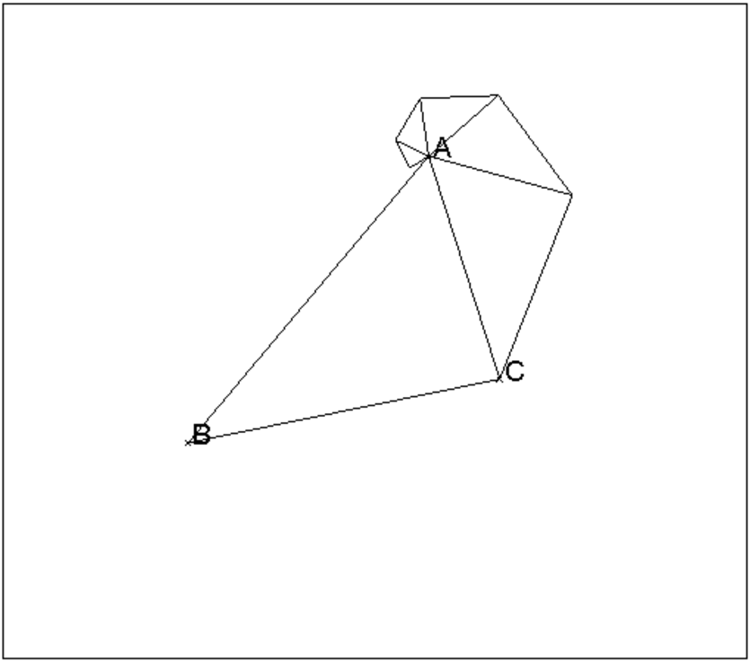
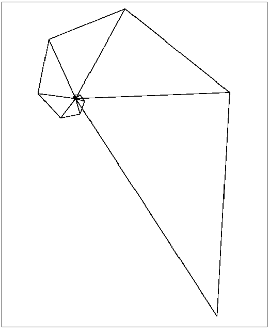

À partir d’un triangle ABC, on trace le triangle ACC1
semblable au triangle ABC. Puis, on recommence le même processus avec
le triangle ACC1 on obtient le triangle AC1C2 etc...
Écrire un programme Xcas qui déssine la suite des n
triangles :
ACC1, AC1C2,...AC(n-1)Cn.
On dessine tout d’abord le triangle ABC, puis on utilise une boucle qui
calcule à chaque étape le nouveau point B (l’ancien point C) et
le nouveau point C (celui obtenu dans la similitude de centre A
de rapport k:=longueur(A,C)/longueur(A,B) et d’angle
t:=angle(A,B,C)).
Attention
On ne suppose rien sur le triangle ABC car t:=angle(A,B,C) renvoie
la mesure de l’angle oriené (→AB,→AC).
On tape :
//a partir d'un triangle ABC on trace son semblable
//sur AC etc...
//k=rapport et t=angle de la similitude
//n=nombre de triangles a construire
spirale(A,B,C,n):={
local k,t,j,L;
L:=triangle(A,B,C);
k:=longueur(A,C)/longueur(A,B);
t:=angle(A,B,C);
for (j:=1;j<=n;j++){
B:=C;
C:=similitude(A,k,t,B);
L:=L,triangle(A,B,C);
}
retourne L;
}:;
On clique sur 3 points ABC, puis on tape :
spirale(A,B,C,5)
On obtient la suite de 6 triangles :

On peut écrire un programme légèrement diffèrent pour ne pas faire deux fois le même trait.
On trace le triangle ABC puis on ne trace dans la boucle que les 2
segments qui vont définir le nouveau triangle :
//meme dessin que spirale(A,B,C,n)
//mais sans repasser sur le meme trait
spirales(A,B,C,n):={
local k,t,L;
L:=triangle(A,B,C);
k:=longueur(A,C)/longueur(A,B);
t:=angle(A,B,C);
for (j:=1;j<=n;j++){
B:=C;
C:=similitude(A,k,t,B);
L:=L,segment(B,C),segment(A,C);
}
retourne L;
}:;
On peut voir la récusivité de 2 façons :
1/ la procédure récursive spiraler(A,B,C,n)
spiraler(A,B,C,0) est le triangle(A,B,C) et
si n>0, spiraler(A,B,C,n) est formé du triangle(A,B,C) et de
spiraler(A,C,C1,n-1) avec C1=similitude(A,k,t,C).
On écrit donc :
//Le dessin obtenu a partir d'un triangle ABC peut
//etre decrit de facon recursive si on a C=similitude(A,k,t,B),
//soit C1=similitude(A,k,t,C) :
//spiraler(A,B,C,0)=triangle(A,B,C)
// si n>0, spiraler(A,B,C,n)=triangle(A,B,C) puis
//spiraler(A,C,C1,n-1)
//n=nombre de triangles a construire=nombre d'appels recursifs
spiraler(A,B,C,n):={
local k,t,L;
k:=longueur(A,C)/longueur(A,B);
t:=angle(A,B,C);
if (n>0) {
L:=triangle(A,B,C);
B:=C;
C:=similitude(A,k,t,B);
L:=L,spiraler(A,B,C,n-1);
} else
L:=triangle(A,B,C);
retourne L;
}:;
On peut écrire un programme légèrement diffèrent pour ne pas faire deux
fois le même trait.
spiralers(A,B,C,0) c’est le triangle(A,B,C)
si n>0, spiralers(A,B,C,n) est formé du segment(A,B), du segment(B,C)
et de spiralers(A,C,C1,n-1) si C1=similitude(A,k,t,C).
On écrit donc :
//meme dessin que spiraler(A,B,C,n)
//mais sans repasser sur le meme trait
//si on a C=similitude(A,k,t,B), soit C1=similitude(A,k,t,C)
//spiralers(A,B,C,0)=triangle(A,B,C) et si n>0,
//spiralers(A,B,C,n)=segment AB et BC puis spiralers(A,C,C1,n-1)
spiralers(A,B,C,n):={
local k,t,L;
k:=longueur(A,C)/longueur(A,B);
t:=angle(A,B,C);
if (n>0) {
L:=segment(A,B),segment(B,C);
B:=C;
C:=similitude(A,k,t,B);
L:=L,spiralers(A,B,C,n-1);
} else
L:=L,triangle(A,B,C);
retourne L;
}:;
2/ la procédure récursive spiraler1s(A,B,C,n) commence à dessiner
la spirale par la fin...
spiraler1s(A,B,C,0) c’est le triangle(A,B,C) et
si n>0, spiraler1s(A,B,C,n) est formé du triangle(A,C(n-1),Cn) (ou des
segments C(n-1)Cn et ACn si on ne veut pas repasser sur le même trait) et
de spiraler1s(A,B,C,n-1) si C(n-1)=similitude(A,k^n,n*t,B)
et Cn=similitude(A,k^n,n*t,C)=similitude(A,k,t,C(n-1)).
//meme dessin que spiraler(A,B,C,n) mais autre facon de voir
//la recursivite spiraler1(A,B,C,0)=triangle(A,B,C) si n>0,
//spiraler1(A,B,C,n)=dernier triangle AMN et spiraler1(A,B,C,n-1)
//sans repasser sur le meme trait :
//spiraler1s(A,B,C,0)=triangle(A,B,C) et si n>0,
//spiraler1s(A,B,C,n)=segments AN et MN et spiraler1s(A,B,C,n-1)
spiraler1s(A,B,C,n):={
local k,t,L;
k:=longueur(A,C)/longueur(A,B);
t:=angle(A,B,C);
if (n>0) {
M:=similitude(A,k^n,n*t,B);
N:=similitude(A,k,t,M);
L:=segment(M,N),segment(A,N);
L:=L,spiraler1s(A,B,C,n-1);
} else
L:=triangle(A,B,C);
}:;
À partir d’un triangle ABC, on trace le triangle ACC1
semblable au triangle ABC. Puis, on recommence le même processus avec
le triangle ACC1 on obtient le triangle AC1C2 etc...
On trace aussi le triangle ABB1
semblable au triangle ABC. Puis, on recommence le même processus avec
le triangle ABB1 on obtient le triangle AB1B2 etc..
Écrire un programme Xcas qui déssine la suite des n
triangles :
ACC1, AC1C2,...AC(n-1)Cn,ABB1, AB1B2,...AB(n-1)Bn
//a partir d'un triangle ABC on trace son semblable sur
//AC etc...n fois, on trace aussi le semblable du triangle ABC
// sur AB etc...(aussi n fois).
spirale2(A,B,C,n):={
local k,t,B0,C0,L;
L:=triangle(A,B,C);
k:=longueur(A,C)/longueur(A,B);
t:=angle(A,B,C);
B0:=B;
C0:=C;
for (j:=1;j<=n;j++){
B:=C;
C:=similitude(A,k,t,B);
L:=L,triangle(A,B,C);
};
B:=B0;
C:=C0;
for (j:=1;j<=n;j++){
C:=B;
B:=similitude(A,1/k,-t,C);
L:=L,triangle(A,B,C);
}
retourne L;
}:;
On clique sur 3 points ABC puis on tape :
spirale2(A,B,C,5)
On obtient la suite de 11 triangles :

pour faire le même dessin mais sans repasser sur le même trait, on tape :
//meme dessin que spirale2(A,B,C,n) mais sans repasser sur le meme trait
spirales2(A,B,C,n):={
local k,t,B0,C0,L,j;
L:=triangle(A,B,C);
k:=longueur(A,C)/longueur(A,B);
t:=angle(A,B,C);
B0:=B;
C0:=C;
for (j:=1;j<=n;j++){
B:=C;
C:=similitude(A,k,t,B);
L:=L,segment(B,C),segment(A,C);
};
B:=B0;
C:=C0;
for (j:=1;j<=n;j++){
C:=B;
B:=similitude(A,1/k,-t,C);
L:=L,segment(B,C),segment(A,B);
};
retourne L;
}:;
Cette fois on a une seule façon de voir le dessin récursif :
spiralers2(A,B,C,0) c’est le triangle(A,B,C)
si n>0, spiralers2(A,B,C,n) est formé des segments ACn et C(n-1)Cn, de
spiraler1s(A,B,C,n-1) puis dessegments ABn et B(n-1)Bn.
On tape :
//meme dessin que spirale2(A,B,C,n) mais en recursif
//cette fois on a une seule facon de voir le dessin
//(analogue a spiraler1s)
//et sans repasser sur le meme trait
//spiralers2(A,B,C,0)=triangle(A,B,C) si n>0,
//spiralers2(A,B,C,n)=segments AN et MN et spiraler1s(A,B,C,n-1)
//et segments AQ et PQ (M=C(n-1),N=Cn,P=B(n-1),Q=Bn)
spiralers2(A,B,C,n):={
local k,t,M,N,P,Q,L;
k:=longueur(A,C)/longueur(A,B);
t:=angle(A,B,C);
if (n>0) {
M:=similitude(A,k^n,n*t,B);
N:=similitude(A,k,t,M);
L:=segment(M,N),segment(A,N);
L:=L,spiralers2(A,B,C,n-1);
P:=similitude(A,1/k^n,-n*t,C);
Q:=similitude(A,1/k,-t,P);
L:=L,segment(P,Q),segment(A,Q);
} else
L:=triangle(A,B,C);
retourne L;}
:;
Remarques
Ainsi on a :
spiralers2(A,B,C,5)= spiralers(A,B,C,5);spiralers(A,C,B,5);
On peut aussi rajouter un paramètre s supplémentaire qui donnera le
sens de la spirale par rapport au signe de t:=angle(A,B,C) : s=1 si
la spirale tourne dans le même sens que les points A,B,C et
s=-1 sinon.
On tape :
//spiraler2s(A,B,C,1,3);spiraler2s(A,B,C,-1,3)
//equivalent a spiralers2(A,B,C,3)
//s= sens de la spirale par rapport au signe
// de l'angle oriente (AB,AC)
spiraler2s(A,B,C,s,n):={
local k,t,L;
if (s==1) {
k:=longueur(A,C)/longueur(A,B);
} else{
k:=longueur(A,B)/longueur(A,C);
}
t:=angle(A,B,C);
if (n>0) {
L:=triangle(A,B,C);
B:=similitude(A,k,s*t,B);
C:=similitude(A,k,s*t,C);
L:=L,spiraler2s(A,B,C,s,n-1);
} else {
L:=triangle(A,B,C);
}
retourne L;
}:;
On clique sur 3 points ABC (triangle ABC direct) puis on tape :
spiraler2s(A,B,C,1,5);spiraler2s(A,B,C,-1,5)
On obtient la suite de 11 triangles.